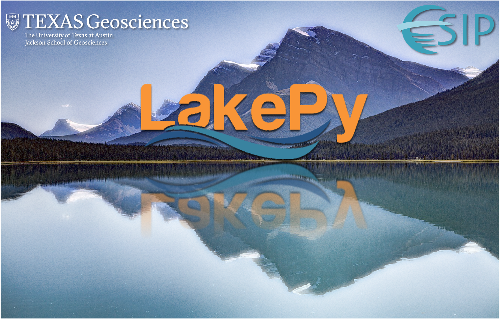

James (Jake) Gearon

| Geomorphologist & Data Scientist | Nature Author Investigating sedimentary landscapes through the lens of data science and remote sensing. Specializing in river avulsions, lacustrine systems, and geospatial data engineering. CV |
GitHub | LinkedIn Contact: jhgearon@iu.edu |
LakePy: Global Lake Water Level Database
ESIP Winter 2020 Grant Project

Project Overview
LakePy addresses a critical gap in hydrological research: the fragmented nature of lake water level data across various federal, state, and academic databases. This project provides an open-source, well-documented, scalable solution for accessing global lake water level data.
Key Features
- Unified Data Access: Collates data from multiple sources including:
- USGS
- HydroWeb
- Copernicus Global Land Service
- NASA
- NOAA
- Various academic publications
- Python API: Provides a pythonic wrapper for the Global Lake Level Database
- AWS Integration: Leverages cloud infrastructure for scalability
- Regular Updates: Maintains current data through automated pipelines
Technical Implementation
- Open-source Python package development
- RESTful API design
- AWS cloud infrastructure
- Automated data pipeline engineering
- Comprehensive documentation
Impact
This work removes significant barriers between researchers and available data by:
- Eliminating manual data-wrangling requirements
- Providing programmatic access to diverse data sources
- Enabling reproducible research workflows
- Supporting both experienced programmers and researchers new to coding